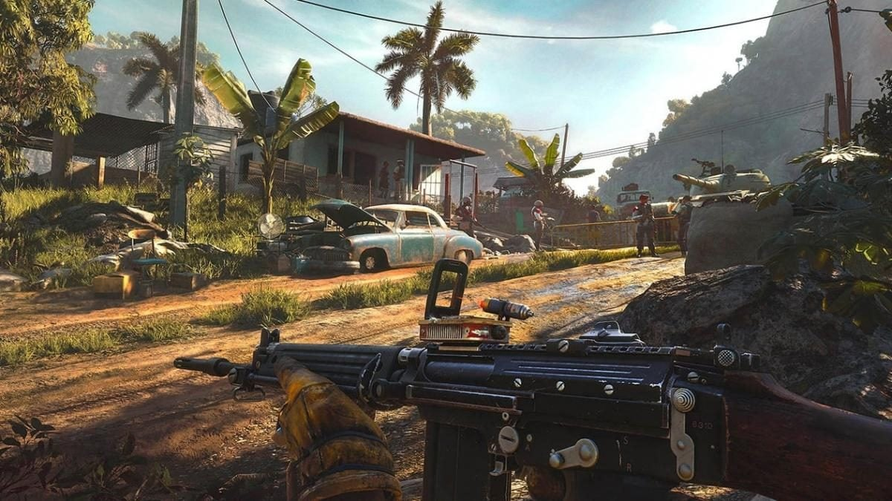

страница об fac cry 6
В 1967 году на Яре произошла революция, в результате которой был свергнут президент Габриэль Кастильо. Из-за этого Яра оказалась изолированной от мира на десятилетия, а её экономика — на грани коллапса. В 2014-м на выборах побеждает сын бывшего президента, Антон Кастильо. Он обещает создать в стране рай на земле с помощью торговли Вивиро — экспериментальным препаратом для лечения рака, который производят из местного табака. Для него, однако, нужно чрезвычайно токсичное удобрение, которое плохо влияет на здоровье рабочих. Семь лет спустя, Кастильо вводит «лотерею», по которой случайным образом выбираются рабочие для принудительного труда на плантациях. Когда Fuerzas Nacionales de Defensa (FND), вооруженные силы страны, начинают рейды в столице страны Эсперансе, трое друзей (Дани Рохас, Лита Торрес и Алехо Руис) пытаются сбежать и начать новую жизнь в США. Алехо убивают, а Дани и Лита попадают на рыбацкое судно с другими беженцами, направляющееся в Майами. Однако судно перехватывает сам Антон, поскольку на нём находится его сын Диего, также попытавшийся сбежать от отца. Антон приказывает потопить корабль. Дани и Лита остаются в живых, но Лита позже умирает от полученных ранений. Перед этим она просит Дани разыскать повстанческую группу Libertad, которую возглавляет Клара Гарсия. После того, как Дани помогает Кларе и оружейному мастеру Хуану Кортесу, он(а) решает примкнуть к повстанцам. Дани поручают склонить на сторону Libertad повстанцев в трёх регионах страны: в Мадругаде — семья Монтеро, имеющая влияние среди рабочих на плантациях. Они сражаются против генерала Хосе Кастильо, племянника диктатора с садистскими наклонностями, командующего военно-воздушными силами. в Валье-де-Оро — Máximas Matanzas, которые противостоят министру культуры Марии Маркессе (она же является матерью Диего), а также доктору Эдгару Рейесу, который и создал Вивиро. в Эль-Эсте — Легенды 67-го (группа старых революционеров, которые участвовали ещё в свержении отца Антона) и La Moral (студенты-анархисты). Их враги — адмирал Анья Бенитес, командующая флотом, и Шон МакКей, канадский бизнесмен, который импортирует химикаты для режима Кастильо. По мере прохождения игры Дани ещё дважды встречается с Диего: во время неудавшегося покушения на Антона в ходе его обращения к народу, и когда Дани похищает и пытает генерал Рауль Санчес, правая рука Кастильо. Они проникаются симпатией друг к другу, и Диего даже спасает Дани жизнь, убивая Санчеса и убеждая отца отпустить Дани. После объединения всех анти-кастильских сил под эгидой Либертад Дани узнаёт, что Кастильо схватил Клару под предлогом мирных переговоров и удерживает её в заложниках на своей вилле. Когда Дани пробирается туда, Антон признаётся, что страдает от лейкемии уже 13 лет, а Вивиро перестал помогать полгода назад. Будучи впечатлён талантами Дани и желая, чтобы у Диего был наставник после его смерти, Кастильо требует, чтобы Дани стал(а) его генералом в обмен на жизнь Клары. Хуан, который в это время прикрывает Дани со снайперской винтовкой, не может прицелиться в Антона и решает выстрелить в Диего, но Дани спасает его от пули. В ответ Кастильо убивает Клару, в результате чего неформальное лидерство в Либертад переходит к Дани. Отец и сын Кастильо возвращаются в Эсперансу, которая теперь окружена объединёнными силами повстанцев. Происходит штурм столицы, Дани проникает в президентский дворец и врывается в кабинет Антона. Диего не хочет, чтобы он(а) убивал(а) его отца. Дани обещает защитить Диего, но Кастильо убежден, что сына будут пытать, так же как это делали с ним самим после предыдущей революции. Он стреляет в него, а потом совершает самоубийство. Перед смертью Диего утешает Дани, и его последние слова «Тебе повезло» отсылают к смерти Литы, которая использовала эту же фразу. Силы сопротивления единогласно провозглашают Дани новым лидером Яры, но Дани отказывается от власти. Похоронив Клару, они с Хуаном продолжают войну против оставшихся лоялистов Кастильо. В сцене после титров Хуан сбывает оставшийся Вивиро контрабандисту, который говорит, что убийство Антоном собственного сына — бессмысленный акт безумия. Альтернативная концовка Если Дани уплывает из Яры до финальной встречи с Кастильо, то в последующей сцене через три месяца он(а) отдыхает на пляже в Майами, в то время как по радио передают, что Кастильо одержал верх над повстанцами на Яре. Разработка и выпуск Анонс Far Cry 6 состоялся 12 июля 2020 года на презентации Ubisoft Forward. Однако уже за два дня в сеть утекли первые подробности о сюжете и героях игры, а за сутки до анонса в интернете выложили трейлер Far Cry 6[6][7]. Ubisoft 12 июля 2020 в рамках Ubisoft Forward официально анонсировала игру показом кинематографического трейлера и объявлением даты выхода — 18 февраля 2021 года[8]. Однако из-за пандемии COVID-19 был объявлен перенос — выход запланирован после апреля 2021 года[9]. Microsoft Store опубликовал новую дату — 26 мая 2021 года[10]. Разработчики указали, что игру следует ждать в текущем финансовом году (апрель 2021 — март 2022)[11]. 4 апреля 2021 года директор по игровому дизайну Тэд Тимминс призвал игроков подождать, и команда готовится показать захватывающий контент[12]. Выход игры на всех платформах состоялся 7 октября 2021 года и включает стандартную, золотую и абсолютную версии. В последние две входят сезонный пропуск и три загружаемых дополнения[13]. 24 июня 2021 года звукорежиссёр Эдуардо Вайсман сообщил, что над Far Cry 6 работают Ubisoft Toronto, а также Ubisoft Montreal, Ubisoft Kyiv, Ubisoft Berlin, Ubisoft Shanghai, Ubisoft Philippines, Ubisoft Bucharest, Ubisoft Pune, Ubisoft Odesa, Ubisoft Winnipeg, Ubisoft Montpellier и Ubisoft Quebec[14]. В интервью Gamereactor от 8 августа 2021 года руководитель мира игры Бен Холл сказал, что появятся случайные события, не зависящие от действий главного героя. Впервые в серии представлена возможность спрятать оружие, чтобы оставаться незамеченным в зоне, контролируемой военными[15]. Таким образом, есть способ исследовать страну, смешавшись с толпой и не вступая в бой[16]. Предусмотрено прохождение как в одиночном, так и в кооперативном режиме[17]. На минимальной сложности это может занять от 15 до 20 часов, на максимальной выйдет 30—35 часов[18]. 17 августа 2021 года продюсер Far Cry 6 Эмиль Лян на персональной странице LinkedIn объявил, что покидает Ubisoft после 24 лет работы, чтобы открыть собственную компанию[19]. 25 августа 2021 года на выставке Gamescom был представлен сюжетный трейлер, посвящённый диктатору Антону Кастильо[20]. 31 августа 2021 года продемонстрированы 6 часов игрового процесса: тропический остров с джунглями в стиле Far Cry 3, аванпосты, путешествие по Яре, сбор ресурсов и модификация оружия, ношение кобуры, вид от третьего лица в лагере повстанцев, напарники-животные, система рангов из Far Cry New Dawn[21]. 20 сентября 2021 года Джанкарло Эспозито рассказал о роли Антона Кастильо и спросил игроков, готовы ли они умереть за идею[22]. На видео он дал советы: не ездить на танках, стрелять из ракетниц по союзникам, не использовать огнемёт. Также Эспозито опроверг предположение фанатов о том, что сын диктатора Диего — это юный Ваас из Far Cry 3[23]. Версия Far Cry 6 на PlayStation 5 и Xbox Series X/S не получила поддержку трассировки лучей. На консолях нового поколения предусмотрены только улучшения графики. Ubisoft хотела достичь частоты 60 кадров в секунду при разрешении 4K. На всех платформах доступны ключевые особенности игрового процесса, например, динамическая смена погоды[24]. В сезонный пропуск вошли обновлённая Far Cry 3: Blood Dragon и приглашённые звёзды: Дэнни Трехо и подражатель Джона Рэмбо. Дополнения «Безумие» (16 ноября 2021 года)[25], «Контроль» (11 января 2022 года)[26] и «Коллапс» (8 февраля 2022 года)[27][28] посвящены антагонистам из предыдущих частей Far Cry: Ваасу Монтенегро, Пэйгану Мину и Иосифу Сиду[29]. Также появятся особая валюта и секретный магазин с уникальной экипировкой и оружием[30]. 2 ноября 2021 года Ubisoft отправила миссии Дэнни Трехо на доработку из-за большого количества ошибок[31]. Позже был добавлен контент из сериала «Во все тяжкие»[32]. 12 ноября 2021 года продюсер Дэн Хэй, руководивший серией Far Cry в Ubisoft Montreal, ушёл из компании после 10 лет работы. До этого он участвовал в создании следующей части, которую планируется выпустить с многопользовательским режимом, аналогично Assassin’s Creed Infinity[33]. 7 декабря 2021 года вышло обновление с исправлениями HD Texture Pack и улучшениями игрового процесса[34]. 16 декабря 2021 года вернулись задания с участием Дэнни Трехо[35]. На этом фоне отток кадров из Ubisoft составил 12 %[36]. 1 февраля 2022 года был опубликован трейлер бесплатного кроссовер-задания фаната Рэмбо, в награду доступно уникальное оружие «Лук отмщения», которым можно пользоваться и в основной игре[37]. 24 марта 2022 года выходит кроссовер с сериалом «Очень странные дела» — миссия «Исчезновение»[38]. Дополнение Lost Between Worlds появилось 6 декабря 2022 года[39]. 11 мая 2023 года игра стала доступна в онлайн-сервисе цифровой дистрибуции Steam вместе с изданием Game of the Year Edition, включающим все вышедшие дополнения к игре[40][41][42][43]. 2 ноября 2023 года Ubisoft сообщила о прекращении выпуска обновлений к Far Cry 6, но серверы отключать не планируется
far cry 6
Саундтрек fac cry 6
Hart-Morgan Офис